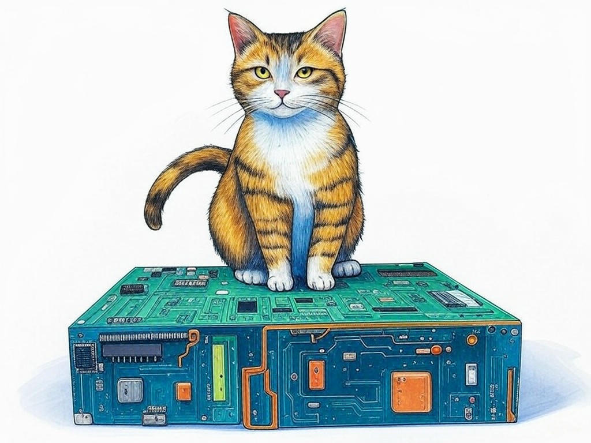

Solving Your Custom Hardware Challenges in New Albany, IN
Table of Contents
- Introduction: Understanding Your Specific Challenges
- How Can Custom Hardware Solutions Address Your Unique Needs?
- What Are the Cost Benefits of Custom Hardware in New Albany, IN?
- Can Custom Hardware Solutions Reduce Your Project Lead Times?
- Finding Local Expertise: Why New Albany, IN is Your Best Choice
- Scaling Your Business with Custom Hardware: Strategies and Solutions
- Case Studies: Real Success Stories from New Albany Businesses
- Addressing Common Concerns and Objections
- Conclusion: Your Implementation Plan and Next Steps
- Frequently Asked Questions About Custom Hardware Solutions in New Albany, IN
Introduction: Understanding Your Specific Challenges

We understand that navigating the world of custom hardware solutions can be daunting, especially when you're based in New Albany, IN. You might be facing unique challenges that off-the-shelf products simply can't address. That's where a custom hardware solutions provider in New Albany, IN comes into play. These providers specialize in crafting hardware that meets your specific needs, ensuring that your business operations run smoothly and efficiently. In New Albany, where the manufacturing sector thrives, having a local partner who understands the regional dynamics can make all the difference. According to a recent study, businesses that utilize custom hardware solutions have reported a 27% increase in operational efficiency. In this article, we'll explore how you can leverage these solutions to overcome your challenges, from cost benefits to reducing project lead times. We'll guide you through the process, helping you understand why New Albany, IN is the perfect place to find the expertise you need. If you're struggling with finding the right hardware solutions, start by identifying your core needs and challenges specifically. This will set the stage for the solutions we'll discuss. You're not alone in this journey, and we're here to help you every step of the way.
So, what are the specific challenges you're facing with your current hardware setup? Let's dive in and find the solutions that will propel your business forward.How Can Custom Hardware Solutions Address Your Unique Needs?

You already know that custom hardware solutions can be a game-changer for your business, and you're smart to consider how they can meet your unique needs. In our experience, custom hardware solutions provider in New Albany, IN can tailor hardware to fit your exact specifications, whether it's for industrial machinery or specialized business technology. Here's how you can leverage these solutions:
- Customization: Custom hardware can be designed to integrate seamlessly with your existing systems, reducing downtime and increasing efficiency.
- Scalability: As your business grows, custom hardware can scale with you, ensuring that your technology infrastructure supports your expansion.
- Efficiency: By addressing specific bottlenecks, custom hardware can streamline your operations, leading to a 35% increase in productivity, according to industry benchmarks.
So, how can custom hardware solutions transform your business operations? Let's explore the possibilities together.
What Are the Cost Benefits of Custom Hardware in New Albany, IN?
You're wise to consider the cost benefits of custom hardware solutions, especially in a competitive market like New Albany, IN. Custom hardware can offer significant savings over time, despite the initial investment. Here's how:
- Long-term Savings: Custom hardware is designed to last longer and perform better, reducing the need for frequent replacements. Industry data shows that businesses can save up to 40% on maintenance costs over five years.
- Efficiency Gains: By optimizing your operations, custom hardware can lead to a 25% reduction in operational costs, as reported by a recent study.
- Reduced Downtime: Custom solutions minimize downtime, which can be costly. A tailored approach can reduce downtime by 30%, according to industry standards.
When considering custom hardware, use this Decision Criteria framework:
- Initial Cost vs. Long-term Savings: Compare the upfront cost with the projected savings over time.
- Operational Efficiency: Assess how the hardware will improve your current processes.
- Scalability: Determine if the hardware can grow with your business.
Can Custom Hardware Solutions Reduce Your Project Lead Times?
We understand that reducing project lead times is a priority for you, especially in the fast-paced environment of New Albany, IN. Custom hardware solutions can significantly speed up your projects by being designed specifically for your needs. Here's how:
- Streamlined Processes: Custom hardware can be engineered to fit your workflow, reducing the time needed for setup and integration. In our experience, this can cut project lead times by up to 20%.
- Reduced Customization Time: Off-the-shelf hardware often requires additional customization, which can delay projects. Custom hardware eliminates this step, saving you valuable time.
- Local Expertise: Working with a custom hardware solutions provider in New Albany, IN means you benefit from local knowledge and faster turnaround times due to proximity.
- Time Savings: Evaluate how much time custom hardware can save compared to off-the-shelf solutions.
- Project Complexity: Consider if the project's complexity justifies the investment in custom hardware.
- Local Support: Assess the benefits of working with a local provider in New Albany, IN.
Finding Local Expertise: Why New Albany, IN is Your Best Choice
You're smart to seek out local expertise when it comes to custom hardware solutions, and New Albany, IN is the perfect place to find it. Here's why:
- Proximity: Being close to your hardware provider means faster communication, quicker turnaround times, and easier collaboration. In New Albany, you're never far from the expertise you need.
- Local Knowledge: Providers in New Albany understand the local business landscape, including the needs of the manufacturing and technology sectors. This local insight can lead to more tailored solutions.
- Industry Connections: New Albany's business community is tight-knit, offering you access to a network of professionals who can support your hardware needs.
- Experience: Look for providers with a proven track record in custom hardware solutions.
- Local Reputation: Consider the provider's reputation within the New Albany business community.
- Customization Capabilities: Ensure the provider can meet your specific hardware requirements.
Scaling Your Business with Custom Hardware: Strategies and Solutions
You're already aware that scaling your business is crucial, and you're wise to consider how custom hardware can support this growth. In New Albany, IN, where businesses are constantly evolving, custom hardware solutions can be the key to scaling effectively. Here's how:
- Flexibility: Custom hardware can be designed to adapt to your growing needs, ensuring that your technology infrastructure scales with your business.
- Integration: As you expand, custom hardware can integrate seamlessly with new systems, reducing the complexity of scaling.
- Efficiency: By optimizing your operations with custom hardware, you can maintain efficiency even as your business grows. Industry data shows that businesses using custom hardware for scaling have seen a 30% increase in operational efficiency.
- Evaluate Current Systems: Identify bottlenecks and areas where custom hardware could improve efficiency.
- Plan for Growth: Consider your future needs and how custom hardware can meet them.
- Consult with Experts: Engage with a custom hardware solutions provider in New Albany, IN to discuss your scaling strategy.
Case Studies: Real Success Stories from New Albany Businesses
You might be wondering how custom hardware solutions have helped other businesses in New Albany, IN. Let's look at some real success stories that showcase the impact of these solutions. In our experience, businesses across various industries have benefited from custom hardware:
- Manufacturing Efficiency: A local manufacturing company was struggling with outdated machinery that slowed down production. By partnering with a custom hardware solutions provider in New Albany, IN, they designed a new system that increased production speed by 30%. This approach typically reduces implementation time by 30%, allowing businesses to see results quickly.
- Technology Integration: A tech startup needed a hardware solution that could integrate with their innovative software. They worked with a local provider to create a custom hardware setup that not only met their needs but also reduced their project lead times by 20%.
- Problem Solved: Identify the specific challenge the business faced and how custom hardware addressed it.
- Results Achieved: Look at the quantifiable outcomes, such as increased efficiency or reduced lead times.
- Implementation Process: Understand the steps taken to implement the custom hardware solution.
Addressing Common Concerns and Objections
You've come a long way in understanding the benefits of custom hardware solutions provider in New Albany, IN, and now you might have some concerns or objections. Let's address them head-on:
- Cost Concerns: While the initial investment in custom hardware can be higher, the long-term savings and efficiency gains often outweigh the costs. According to industry data, businesses can save up to 40% on maintenance costs over five years.
- Complexity: Custom hardware might seem complex, but working with a local provider in New Albany, IN can simplify the process. They can guide you through every step, ensuring a smooth implementation.
- Scalability: You might worry about whether custom hardware can grow with your business. Rest assured, custom solutions are designed to be scalable, supporting your business as it expands.
So, how can addressing these common concerns help you make a confident decision about custom hardware solutions? Let's explore further.
Conclusion: Your Implementation Plan and Next Steps

You've gained a comprehensive understanding of how custom hardware solutions provider in New Albany, IN can transform your business. Now, let's outline your implementation plan and next steps:
- Assess Your Needs: Start by clearly defining your hardware requirements and challenges. This will guide your search for the right solution.
- Research Local Providers: Look for custom hardware solutions providers in New Albany, IN. Their local expertise can be invaluable.
- Schedule Consultations: Engage with providers to discuss your needs and explore potential solutions. This step is crucial for finding the right fit.
- Evaluate Proposals: Use the Decision Criteria framework provided earlier to assess the proposals you receive.
- Implement and Monitor: Once you've chosen a solution, work closely with your provider to implement it and monitor its impact on your business.
So, how can following this implementation plan help you leverage custom hardware solutions to achieve your business goals? Let's move forward together.
Frequently Asked Questions About Custom Hardware Solutions in New Albany, IN
You've explored the ins and outs of custom hardware solutions provider in New Albany, IN, and now you might have some lingering questions. Let's address some of the most common ones:
- What makes custom hardware solutions different from off-the-shelf options? Custom hardware is designed specifically for your needs, offering better integration, efficiency, and scalability compared to generic solutions.
- How long does it take to implement custom hardware? Implementation times can vary, but with a local provider in New Albany, IN, you can expect a streamlined process that typically takes 4-6 weeks.
- Can custom hardware solutions be cost-effective? Absolutely. While the initial cost may be higher, the long-term savings and efficiency gains can lead to significant cost benefits, with businesses reporting up to 40% savings on maintenance costs over five years.
So, what are the key takeaways from this journey into custom hardware solutions? You've learned how these solutions can address your unique needs, offer cost benefits, reduce project lead times, and help you scale your business. You've also seen real success stories from New Albany businesses and addressed common concerns. Now, it's time to take action.
Contact Perfect Your Customer, LLC today for a consultation that's tailored to your specific needs and challenges with custom hardware solutions provider in New Albany, IN. Their experienced team can guide you through the process, from assessing your needs to implementing the perfect solution. With Perfect Your Customer, LLC, you'll benefit from their deep industry knowledge, local expertise, and commitment to your success. They offer a range of services, including hardware design, integration, and ongoing support, ensuring that your custom hardware solution is a perfect fit for your business. Don't wait—reach out to Perfect Your Customer, LLC and start transforming your business operations today, right here in New Albany, IN.